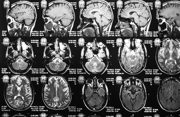

Brief About Machine Learning

Author Rishi
Artificial Intelligence and Machine Learning are the terms of computer science. They have become integral to many businesses. But, the terms are often used mutually. The term is frequently applied to the project of developing systems introduced with the intellectual processes characteristic of humans. Our Gmail account emails are classified as primary, social, promotional. It is challenging for a human to differentiate all the emails and then categorize them. So, Who is behind that? It is none other than machine learning. It also filters spam emails and sends me a notification when we receive a mail from an advertisement. Machine learning identifies spam emails by recognizing and understanding the patterns. I was recently looking for some headphones online. I closed that tab and opened my social media account. In a while, headphones’ recommendations appeared in the middle of the page as a popup. It is nothing but Artificial Intelligence. It works like a computer program that does a smart job.
What is Machine Learning
Machine learning is one sub field of Artificial Intelligence. The core principle here is that machines take data and “learn” for themselves. Machine Learning is the learning in which machines can learn on their own without being explicitly programmed. It is an application of AI that provides the system with the ability to automatically learn and improve from experience. Machine learning enables a computer system to make predictions or take some decisions using historical data without being explicitly programmed. Machine-learning techniques are required to improve the sharpness of predictive models. Depending on the nature of the industry problem being addressed, there are different approaches based on the type and volume of the data. Machine learning uses a huge amount of structured and semi-structured data. Machine learning works on the algorithm which learns on its own using historical data. It is being used in various places such as Email spam filters, Google search algorithms, Facebook Auto friend tagging suggestions, etc.
It’s currently the most encouraging tool in AI tools for companies. ML systems can quickly apply knowledge and training from large data sets to excel at facial recognition, speech recognition, object recognition, translation, and many other tasks. Unlike hand-coding a software program with specific instructions to complete a task, ML allows a system to learn to recognize patterns on its own and make predictions.
It is mainly divided into three types:
1.Supervised learning
2.Unsupervised learning
3.Reinforcement learning
Supervised Learning
Supervised learning is a common popular paradigm for machine learning. It is the easiest to understand and the simplest to implement. When fully-trained, the supervised learning algorithm will be able to observe a new, never-before-seen example and predict a good label for it. Supervised learning is often described as task-oriented because of this. It is highly focused on a singular task, feeding more and more examples.
Spam classification, face recognition are examples of supervised learning.
Unsupervised Learning
Unsupervised learning is very much the reverse of supervised learning. It highlights no labels. Instead, our algorithm would be fed a lot of data and given the tools to get the properties of the data. Because unsupervised learning is based upon the data and its properties, we can say that unsupervised learning is data-driven. The outcomes from an unsupervised learning task are controlled by the data and the way it’s formatted. Recommender systems, buying habits are an example of Unsupervised learning.Reinforcement Learning
Reinforcement learning is somewhat different when compared to supervised and unsupervised learning. Where we can easily see the connection between supervised and unsupervised the relation to reinforcement learning is a bit deeper. Reinforcement learning is very behavior-driven. It has characters from the fields of neuroscience and psychology. We look at reinforcement learning as learning from errors. Place a reinforcement learning algorithm into any situation and it will make a lot of mistakes in the beginning. Video Games, Industrial Simulation, etc are examples of Reinforcement learning. Some important Applications of Machine Learning.ML in the medical field
The frequently growing number of applications of machine learning in healthcare allows us to glimpse at a future where data, analysis, and innovation work hand-in-hand to help countless patients. Some applications of Machine Learning in the medical field are-
Identifying Diseases and Diagnosis
1.
Maintaining up-to-date health records
2.
Drug Discovery/Manufacturing
3.
Clinical Trial Research
4.
Better Radiotherapy
5.
Epidemic Outbreak Prediction, etc.
6.
ML for Online Customer Support.
Plenty of websites nowadays offer the choice to chat with customer support representatives while they are navigating on the site. However, not every website has a live executive to answer your queries.They tend to understand the user questions better and help them with better answers, which is possible due to its machine learning algorithms.
Wrapping Up with a quote by ‘Nick Bostrom’
“Machine intelligence is the last invention that humanity will ever need to make.”
This is very true as our world is directly or indirectly connect with machines. In today’s world, machine learning and artificial intelligence are one of the great domains to have good jobs and projects.